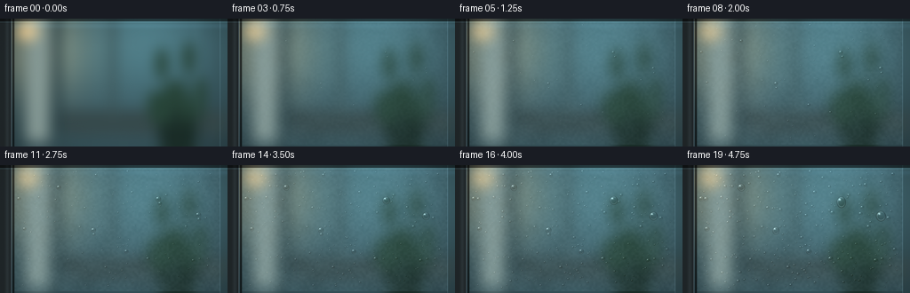
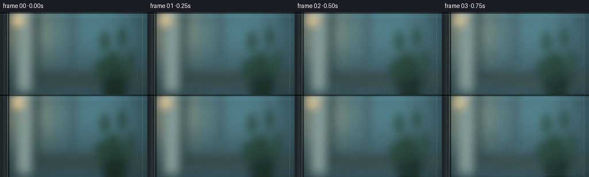

CODING AGENTS AS PIXEL WORLD MODELS
traex/GPT-6.1-Sol · phygen_101
点击播放 · 原生 RGB 像素
逐轮保存的候选
回放视频、检查图与代码变化。
每份候选均可单独播放。实际图片检查记录在下方工具轨迹中。
候选 01播放与检查图
点击播放 · 原生 RGB 像素


展开代码变化
--- 上一保存版本
+++ 本次保存版本
@@ -0,0 +1,215 @@
+"""Procedural macro timelapse: nucleation, condensation, coalescence and runoff.
+No source imagery or external renderer is used.
+"""
+from pathlib import Path
+import json
+import math
+import numpy as np
+from PIL import Image, ImageDraw, ImageFilter
+import artifact_io
+
+ROOT = Path(__file__).resolve().parent
+SPEC = json.loads((ROOT / 'task_spec.json').read_text())
+W, H, S = SPEC['width'], SPEC['height'], 3
+WW, HH = W*S, H*S
+rng = np.random.default_rng(10173)
+Y, X = np.mgrid[0:HH, 0:WW].astype(np.float32)
+x, y = X/S, Y/S
+
+# A defocused interior, lit by a large cool window and a warm practical light.
+base = np.empty((HH,WW,3), np.float32)
+vignette = np.clip(1 - .23*((x-132)/150)**2 - .2*((y-66)/105)**2, .5, 1)
+for c, val in enumerate((58, 88, 96)):
+ base[:,:,c] = val*vignette
+warm = np.exp(-((x-46)/51)**2-((y-34)/56)**2)
+cool = np.exp(-((x-173)/85)**2-((y-20)/70)**2)
+base += warm[:,:,None]*np.array([77,59,34])
+base += cool[:,:,None]*np.array([26,44,47])
+bg = Image.fromarray(np.uint8(np.clip(base,0,255)))
+d = ImageDraw.Draw(bg)
+def rect(box, color): d.rectangle(tuple(int(v*S) for v in box), fill=color)
+def ellipse(box, color): d.ellipse(tuple(int(v*S) for v in box), fill=color)
+# These are deliberately soft shapes beyond the focal plane, not surface marks.
+rect((29,-12,55,138),(131,150,145))
+rect((59,-8,68,130),(43,66,71))
+rect((68,103,253,130),(55,74,76))
+rect((124,-7,130,111),(60,84,86))
+ellipse((18,3,43,25),(226,195,137))
+ellipse((27,5,35,21),(247,222,172))
+ellipse((178,92,223,158),(27,46,41))
+for _ in range(13):
+ px=rng.uniform(171,233); py=rng.uniform(45,113)
+ d.ellipse((int((px-8)*S),int((py-20)*S),int((px+5)*S),int((py+16)*S)),fill=(40,69,57))
+bg = bg.filter(ImageFilter.GaussianBlur(7*S))
+clear = np.array(bg).astype(np.float32)
+# Subtle reflections at the surface, including a long upper-left softbox.
+reflection = np.exp(-((x-42)/13)**2)*.06 + np.exp(-((x-221)/6)**2)*.025
+clear += reflection[:,:,None]*np.array([72,98,112])
+clear += np.exp(-((y-8)/3)**2)[:,:,None]*np.array([5,9,12])
+soft = np.array(Image.fromarray(np.uint8(np.clip(clear,0,255))).filter(ImageFilter.GaussianBlur(5*S))).astype(np.float32)
+
+# Multiscale coherent texture: patchy nucleation of the milky film.
+def noise_field(sw, sh, blur=0):
+ a=np.uint8(rng.uniform(0,255,(sh,sw)))
+ im=Image.fromarray(a).resize((WW,HH),Image.Resampling.BICUBIC)
+ if blur: im=im.filter(ImageFilter.GaussianBlur(blur*S))
+ return np.array(im).astype(np.float32)/255
+patch=noise_field(19,11,2)
+fine=noise_field(120,70,.1)
+grains=rng.normal(0,1,(HH,WW)).astype(np.float32)
+plane=(x>16)&(x<248)&(y>3)&(y<142)
+
+# Condensate particles carry volume; touching beads merge conservatively.
+particles=[]
+for i in range(490):
+ px=rng.uniform(21,243); py=rng.uniform(7,138)
+ birth=rng.uniform(.045,.68)
+ # Most droplets are small; a few sites preferentially collect more water.
+ size=rng.lognormal(-.16,.49)
+ size=float(np.clip(size,.35,2.8))
+ particles.append(dict(x=px,y=py,r=0.,birth=birth,target=size,alive=True,
+ threshold=rng.uniform(3.7,5.5),vy=0.,path=[]))
+for px,py,sz,thr in [(178,38,4.0,3.7),(179.9,43,2.9,4.0),(105,73,3.7,3.5),
+ (105.6,78,2.4,3.8),(223,56,4.0,3.9),(223.9,61,2.7,4.2),
+ (66,25,3.2,5.0),(142,97,3.1,5.0)]:
+ particles.append(dict(x=px,y=py,r=0.,birth=.09,target=sz,alive=True,
+ threshold=thr,vy=0.,path=[]))
+
+trail_segments=[]
+def evolve(t, dt):
+ for p in particles:
+ if not p['alive'] or t<p['birth']: continue
+ # Surface condensation increases projected area over time.
+ p['r']=math.sqrt(p['r']**2 + p['target']**2*dt/(1-p['birth']))
+ if p['r']>p['threshold'] or p['vy']>0:
+ p['vy']=min(68,p['vy']+dt*88*(p['r']/p['threshold'])**2)
+ old=(p['x'],p['y'])
+ p['y']+=p['vy']*dt
+ p['x']+=math.sin(p['y']*.12+old[0])*.14*dt
+ trail_segments.append((old[0],old[1],p['x'],p['y'],max(.55,p['r']*.20)))
+ if p['y']>H+9: p['alive']=False
+ active=[p for p in particles if p['alive'] and p['r']>.25]
+ for i,p in enumerate(active):
+ if not p['alive']: continue
+ for q in active[i+1:]:
+ if not q['alive']: continue
+ rr=p['r']+q['r']
+ if abs(p['x']-q['x'])>rr or abs(p['y']-q['y'])>rr: continue
+ if (p['x']-q['x'])**2+(p['y']-q['y'])**2 < (.83*rr)**2:
+ v1=p['r']**3; v2=q['r']**3; total=v1+v2
+ # A running head keeps its trajectory and collects smaller drops.
+ if p['vy']<1:
+ p['x']=(p['x']*v1+q['x']*v2)/total
+ p['y']=(p['y']*v1+q['y']*v2)/total
+ p['r']=total**(1/3)
+ p['target']=math.sqrt(p['target']**2+q['target']**2)
+ p['vy']=max(p['vy'],q['vy'])
+ q['alive']=False
+
+
+def trail_mask():
+ mask=np.zeros((HH,WW),np.float32)
+ for ax,ay,bx,by,rad in trail_segments:
+ ix0=max(0,int((min(ax,bx)-rad-1)*S)); ix1=min(WW,int((max(ax,bx)+rad+1)*S)+1)
+ iy0=max(0,int((min(ay,by)-rad-1)*S)); iy1=min(HH,int((max(ay,by)+rad+1)*S)+1)
+ if ix1<=ix0 or iy1<=iy0: continue
+ xx=x[iy0:iy1,ix0:ix1]; yy=y[iy0:iy1,ix0:ix1]
+ vx=bx-ax; vy=by-ay
+ f=np.clip(((xx-ax)*vx+(yy-ay)*vy)/(vx*vx+vy*vy+1e-6),0,1)
+ dist=np.sqrt((xx-ax-f*vx)**2+(yy-ay-f*vy)**2)
+ a=np.clip((rad+.4-dist)/.6,0,1)
+ mask[iy0:iy1,ix0:ix1]=np.maximum(mask[iy0:iy1,ix0:ix1],a)
+ return mask
+
+
+def bead(frame,p):
+ r=p['r']
+ if r<.10: return
+ cx,cy=p['x'],p['y']
+ elong=1+min(p['vy']/110,.34)
+ rx=r*(1-.07*min(p['vy']/35,1)); ry=r*elong
+ x0=max(0,int((cx-rx-1)*S)); x1=min(WW,int((cx+rx+1)*S)+1)
+ y0=max(0,int((cy-ry-1)*S)); y1=min(HH,int((cy+ry+1)*S)+1)
+ if x1<=x0 or y1<=y0: return
+ dx=(x[y0:y1,x0:x1]-cx)/rx; dy=(y[y0:y1,x0:x1]-cy)/ry
+ q=dx*dx+dy*dy; rho=np.sqrt(q)
+ z=np.sqrt(np.clip(1-q,0,1))
+ alpha=np.clip((1-rho)*min(rx,ry)*S+.5,0,1)
+ # A water lens locally focuses the out-of-focus background.
+ sx=np.clip(((cx+dx*rx*(.5+1.3*rho))*S).astype(int),0,WW-1)
+ sy=np.clip(((cy+dy*ry*(.5+1.3*rho)+ry*.22)*S).astype(int),0,HH-1)
+ refracted=clear[sy,sx].copy()
+ local=frame[y0:y1,x0:x1]
+ # Light and dark menisci are narrow, not opaque outlines.
+ rim=np.exp(-((rho-.89)/.074)**2)
+ refracted *= (1-.24*rim-.085*dy-.065*(1-z))[:,:,None]
+ bottom=np.exp(-((rho-.80)/.11)**2)*np.clip(dy*.9+dx*.12,0,1)
+ refracted += bottom[:,:,None]*np.array([55,66,68])
+ # Reflected cool window: curved upper crescent and crisp off-axis sparkle.
+ crescent=np.exp(-((rho-.79)/.095)**2)*np.clip(-dy*.6-dx*.46,0,1)
+ sparkle=np.exp(-((dx+.34)/.18)**2-((dy+.45)/.14)**2)
+ broad=np.exp(-((dx+.35)/.39)**2-((dy+.36)/.23)**2)
+ refracted += crescent[:,:,None]*np.array([93,105,109])
+ refracted += sparkle[:,:,None]*np.array([139,148,146]) + broad[:,:,None]*np.array([22,26,27])
+ # Tiny beads have softer highlights below the pixel sampling limit.
+ alpha*=min(1,r/.43)
+ local[:]=local*(1-alpha[:,:,None])+refracted*alpha[:,:,None]
+
+
+def borders(frame):
+ # Only a slim sliver of frame is in view: the wet plane stays the focal point.
+ a=np.exp(-((x-14.8)/1.2)**2)
+ frame[:]=frame*(1-a[:,:,None]*.76)
+ strip=(x<13)
+ brushed=40+14*np.exp(-((x-8)/2.1)**2)+2*np.sin(x*6)
+ colors=np.stack([brushed*.81,brushed*.98,brushed*1.04],axis=-1)
+ frame[strip]=colors[strip]
+ for xx,strength,width in [(12.6,65,.38),(14.2,22,.28),(247.5,35,.35)]:
+ line=np.exp(-((x-xx)/width)**2)
+ frame+=line[:,:,None]*np.array([strength*.72,strength*.88,strength])
+ # Thin top glass reflection with a dark gasket outside it.
+ top=y<3
+ frame[top]*=.48
+ frame+=np.exp(-((y-3.8)/.37)**2)[:,:,None]*np.array([20,31,34])
+
+frames=[]
+last_t=0
+for k in range(SPEC['frames']):
+ t=k/(SPEC['frames']-1)
+ if k:
+ for sub in range(6): evolve(last_t+(t-last_t)*(sub+1)/6,(t-last_t)/6)
+ last_t=t
+ onset=1-math.exp(-t*5)
+ fog=onset*(.25+.28*patch+.065*fine)
+ fog*=plane
+ trail=trail_mask()
+ fog*=1-trail*.91
+ film=soft*.74+np.array([73,100,108])*.26
+ frame=clear*(1-fog[:,:,None])+film*fog[:,:,None]
+ # A condensation film scatters light and slightly veils what lies behind it.
+ frame+=fog[:,:,None]*np.array([15,21,23])
+ texture=(fine-.5)*onset*5.5+grains*.36*onset
+ frame+=texture[:,:,None]*plane[:,:,None]
+ # Fine nucleation sparkles become visible before the larger drops grow.
+ if k>1:
+ frame+=trail[:,:,None]*np.array([1.0,2.3,2.8])
+ # Warm humid air rolls across the foreground early, dispersing on the cool pane.
+ if 0<k<11:
+ drift=19+t*135
+ wisp=np.exp(-((x-drift-11*np.sin(y*.037+t*6))/24)**2)
+ wisp*=np.exp(-((y-86+17*np.sin(x*.022+t*4))/51)**2)
+ wisp*=math.sin(math.pi*min(t/.58,1))*.062
+ frame=frame*(1-wisp[:,:,None])+np.array([178,192,191])*wisp[:,:,None]
+ for p in sorted(particles,key=lambda pp:pp['r']):
+ if p['alive']: bead(frame,p)
+ borders(frame)
+ # Macro photography lens falloff and light, temporally stable sensor texture.
+ lens=np.clip(1-.08*((x-128)/160)**2-.045*((y-72)/110)**2,.8,1)
+ frame*=lens[:,:,None]
+ frame+=grains[:,:,None]*.28
+ im=Image.fromarray(np.uint8(np.clip(frame,0,255))).resize((W,H),Image.Resampling.LANCZOS)
+ frames.append(np.asarray(im))
+frames=np.stack(frames).astype(np.uint8)
+artifact_io.save(frames, ROOT)
+print(f'Saved {len(frames)} RGB frames, {W}x{H}, {SPEC["fps"]} fps.')
+print('Final active drops:',sum(p['alive'] and p['r']>.1 for p in particles),'runoff segments:',len(trail_segments))
可观测工具轨迹
实际执行的命令与返回图片。
命令 1exit 0
/bin/bash -lc 'ls -la && cat prompt.txt && cat GENERATION_RULES.md && cat task_spec.json'
命令 2exit 0
/bin/bash -lc 'cat artifact_io.py'
命令 3exit 0
/bin/bash -lc "python - <<'PY'
import numpy,PIL
print('numpy',numpy.__version__,'PIL',PIL.__version__)
PY"命令 4exit 0
/bin/bash -lc "cat > generate.py <<'PY'
\"\"\"Procedural macro timelapse: nucleation, condensation, coalescence and runoff.
No source imagery or external renderer is used.
\"\"\"
from pathlib import Path
import json
import math
import numpy as np
from PIL import Image, ImageDraw, ImageFilter
import artifact_io
ROOT = Path(__file__).resolve().parent
SPEC = json.loads((ROOT / 'task_spec.json').read_text())
W, H, S = SPEC['width'], SPEC['height'], 3
WW, HH = W*S, H*S
rng = np.random.default_rng(10173)
Y, X = np.mgrid[0:HH, 0:WW].astype(np.float32)
x, y = X/S, Y/S
# A defocused interior, lit by a large cool window and a warm practical light.
base = np.empty((HH,WW,3), np.float32)
vignette = np.clip(1 - .23*((x-132)/150)**2 - .2*((y-66)/105)**2, .5, 1)
for c, val in enumerate((58, 88, 96)):
base[:,:,c] = val*vignette
warm = np.exp(-((x-46)/51)**2-((y-34)/56)**2)
cool = np.exp(-((x-173)/85)**2-((y-20)/70)**2)
base += warm[:,:,None]*np.array([77,59,34])
base += cool[:,:,None]*np.array([26,44,47])
bg = Image.fromarray(np.uint8(np.clip(base,0,255)))
d = ImageDraw.Draw(bg)
def rect(box, color): d.rectangle(tuple(int(v*S) for v in box), fill=color)
def ellipse(box, color): d.ellipse(tuple(int(v*S) for v in box), fill=color)
# These are deliberately soft shapes beyond the focal plane, not surface marks.
rect((29,-12,55,138),(131,150,145))
rect((59,-8,68,130),(43,66,71))
rect((68,103,253,130),(55,74,76))
rect((124,-7,130,111),(60,84,86))
ellipse((18,3,43,25),(226,195,137))
ellipse((27,5,35,21),(247,222,172))
ellipse((178,92,223,158),(27,46,41))
for _ in range(13):
px=rng.uniform(171,233); py=rng.uniform(45,113)
d.ellipse((int((px-8)*S),int((py-20)*S),int((px+5)*S),int((py+16)*S)),fill=(40,69,57))
bg = bg.filter(ImageFilter.GaussianBlur(7*S))
clear = np.array(bg).astype(np.float32)
# Subtle reflections at the surface, including a long upper-left softbox.
reflection = np.exp(-((x-42)/13)**2)*.06 + np.exp(-((x-221)/6)**2)*.025
clear += reflection[:,:,None]*np.array([72,98,112])
clear += np.exp(-((y-8)/3)**2)[:,:,None]*np.array([5,9,12])
soft = np.array(Image.fromarray(np.uint8(np.clip(clear,0,255))).filter(ImageFilter.GaussianBlur(5*S))).astype(np.float32)
# Multiscale coherent texture: patchy nucleation of the milky film.
def noise_field(sw, sh, blur=0):
a=np.uint8(rng.uniform(0,255,(sh,sw)))
im=Image.fromarray(a).resize((WW,HH),Image.Resampling.BICUBIC)
if blur: im=im.filter(ImageFilter.GaussianBlur(blur*S))
return np.array(im).astype(np.float32)/255
patch=noise_field(19,11,2)
fine=noise_field(120,70,.1)
grains=rng.normal(0,1,(HH,WW)).astype(np.float32)
plane=(x>16)&(x<248)&(y>3)&(y<142)
# Condensate particles carry volume; touching beads merge conservatively.
particles=[]
for i in range(490):
px=rng.uniform(21,243); py=rng.uniform(7,138)
birth=rng.uniform(.045,.68)
# Most droplets are small; a few sites preferentially collect more water.
size=rng.lognormal(-.16,.49)
size=float(np.clip(size,.35,2.8))
particles.append(dict(x=px,y=py,r=0.,birth=birth,target=size,alive=True,
threshold=rng.uniform(3.7,5.5),vy=0.,path=[]))
for px,py,sz,thr in [(178,38,4.0,3.7),(179.9,43,2.9,4.0),(105,73,3.7,3.5),
(105.6,78,2.4,3.8),(223,56,4.0,3.9),(223.9,61,2.7,4.2),
(66,25,3.2,5.0),(142,97,3.1,5.0)]:
particles.append(dict(x=px,y=py,r=0.,birth=.09,target=sz,alive=True,
threshold=thr,vy=0.,path=[]))
trail_segments=[]
def evolve(t, dt):
for p in particles:
if not p['alive'] or t<p['birth']: continue
# Surface condensation increases projected area over time.
p['r']=math.sqrt(p['r']**2 + p['target']**2*dt/(1-p['birth']))
if p['r']>p['threshold'] or p['vy']>0:
p['vy']=min(68,p['vy']+dt*88*(p['r']/p['threshold'])**2)
old=(p['x'],p['y'])
p['y']+=p['vy']*dt
p['x']+=math.sin(p['y']*.12+old[0])*.14*dt
trail_segments.append((old[0],old[1],p['x'],p['y'],max(.55,p['r']*.20)))
if p['y']>H+9: p['alive']=False
active=[p for p in particles if p['alive'] and p['r']>.25]
for i,p in enumerate(active):
if not p['alive']: continue
for q in active[i+1:]:
if not q['alive']: continue
rr=p['r']+q['r']
if abs(p['x']-q['x'])>rr or abs(p['y']-q['y'])>rr: continue
if (p['x']-q['x'])**2+(p['y']-q['y'])**2 < (.83*rr)**2:
v1=p['r']**3; v2=q['r']**3; total=v1+v2
# A running head keeps its trajectory and collects smaller drops.
if p['vy']<1:
p['x']=(p['x']*v1+q['x']*v2)/total
p['y']=(p['y']*v1+q['y']*v2)/total
p['r']=total**(1/3)
p['target']=math.sqrt(p['target']**2+q['target']**2)
p['vy']=max(p['vy'],q['vy'])
q['alive']=False
def trail_mask():
mask=np.zeros((HH,WW),np.float32)
for ax,ay,bx,by,rad in trail_segments:
ix0=max(0,int((min(ax,bx)-rad-1)*S)); ix1=min(WW,int((max(ax,bx)+rad+1)*S)+1)
iy0=max(0,int((min(ay,by)-rad-1)*S)); iy1=min(HH,int((max(ay,by)+rad+1)*S)+1)
if ix1<=ix0 or iy1<=iy0: continue
xx=x[iy0:iy1,ix0:ix1]; yy=y[iy0:iy1,ix0:ix1]
vx=bx-ax; vy=by-ay
f=np.clip(((xx-ax)*vx+(yy-ay)*vy)/(vx*vx+vy*vy+1e-6),0,1)
dist=np.sqrt((xx-ax-f*vx)**2+(yy-ay-f*vy)**2)
a=np.clip((rad+.4-dist)/.6,0,1)
mask[iy0:iy1,ix0:ix1]=np.maximum(mask[iy0:iy1,ix0:ix1],a)
return mask
def bead(frame,p):
r=p['r']
if r<.10: return
cx,cy=p['x'],p['y']
elong=1+min(p['vy']/110,.34)
rx=r*(1-.07*min(p['vy']/35,1)); ry=r*elong
x0=max(0,int((cx-rx-1)*S)); x1=min(WW,int((cx+rx+1)*S)+1)
y0=max(0,int((cy-ry-1)*S)); y1=min(HH,int((cy+ry+1)*S)+1)
if x1<=x0 or y1<=y0: return
dx=(x[y0:y1,x0:x1]-cx)/rx; dy=(y[y0:y1,x0:x1]-cy)/ry
q=dx*dx+dy*dy; rho=np.sqrt(q)
z=np.sqrt(np.clip(1-q,0,1))
alpha=np.clip((1-rho)*min(rx,ry)*S+.5,0,1)
# A water lens locally focuses the out-of-focus background.
sx=np.clip(((cx+dx*rx*(.5+1.3*rho))*S).astype(int),0,WW-1)
sy=np.clip(((cy+dy*ry*(.5+1.3*rho)+ry*.22)*S).astype(int),0,HH-1)
refracted=clear[sy,sx].copy()
local=frame[y0:y1,x0:x1]
# Light and dark menisci are narrow, not opaque outlines.
rim=np.exp(-((rho-.89)/.074)**2)
refracted *= (1-.24*rim-.085*dy-.065*(1-z))[:,:,None]
bottom=np.exp(-((rho-.80)/.11)**2)*np.clip(dy*.9+dx*.12,0,1)
refracted += bottom[:,:,None]*np.array([55,66,68])
# Reflected cool window: curved upper crescent and crisp off-axis sparkle.
crescent=np.exp(-((rho-.79)/.095)**2)*np.clip(-dy*.6-dx*.46,0,1)
sparkle=np.exp(-((dx+.34)/.18)**2-((dy+.45)/.14)**2)
broad=np.exp(-((dx+.35)/.39)**2-((dy+.36)/.23)**2)
refracted += crescent[:,:,None]*np.array([93,105,109])
refracted += sparkle[:,:,None]*np.array([139,148,146]) + broad[:,:,None]*np.array([22,26,27])
# Tiny beads have softer highlights below the pixel sampling limit.
alpha*=min(1,r/.43)
local[:]=local*(1-alpha[:,:,None])+refracted*alpha[:,:,None]
def borders(frame):
# Only a slim sliver of frame is in view: the wet plane stays the focal point.
a=np.exp(-((x-14.8)/1.2)**2)
frame[:]=frame*(1-a[:,:,None]*.76)
strip=(x<13)
brushed=40+14*np.exp(-((x-8)/2.1)**2)+2*np.sin(x*6)
colors=np.stack([brushed*.81,brushed*.98,brushed*1.04],axis=-1)
frame[strip]=colors[strip]
for xx,strength,width in [(12.6,65,.38),(14.2,22,.28),(247.5,35,.35)]:
line=np.exp(-((x-xx)/width)**2)
frame+=line[:,:,None]*np.array([strength*.72,strength*.88,strength])
# Thin top glass reflection with a dark gasket outside it.
top=y<3
frame[top]*=.48
frame+=np.exp(-((y-3.8)/.37)**2)[:,:,None]*np.array([20,31,34])
frames=[]
last_t=0
for k in range(SPEC['frames']):
t=k/(SPEC['frames']-1)
if k:
for sub in range(6): evolve(last_t+(t-last_t)*(sub+1)/6,(t-last_t)/6)
last_t=t
onset=1-math.exp(-t*5)
fog=onset*(.25+.28*patch+.065*fine)
fog*=plane
trail=trail_mask()
fog*=1-trail*.91
film=soft*.74+np.array([73,100,108])*.26
frame=clear*(1-fog[:,:,None])+film*fog[:,:,None]
# A condensation film scatters light and slightly veils what lies behind it.
frame+=fog[:,:,None]*np.array([15,21,23])
texture=(fine-.5)*onset*5.5+grains*.36*onset
frame+=texture[:,:,None]*plane[:,:,None]
# Fine nucleation sparkles become visible before the larger drops grow.
if k>1:
frame+=trail[:,:,None]*np.array([1.0,2.3,2.8])
# Warm humid air rolls across the foreground early, dispersing on the cool pane.
if 0<k<11:
drift=19+t*135
wisp=np.exp(-((x-drift-11*np.sin(y*.037+t*6))/24)**2)
wisp*=np.exp(-((y-86+17*np.sin(x*.022+t*4))/51)**2)
wisp*=math.sin(math.pi*min(t/.58,1))*.062
frame=frame*(1-wisp[:,:,None])+np.array([178,192,191])*wisp[:,:,None]
for p in sorted(particles,key=lambda pp:pp['r']):
if p['alive']: bead(frame,p)
borders(frame)
# Macro photography lens falloff and light, temporally stable sensor texture.
lens=np.clip(1-.08*((x-128)/160)**2-.045*((y-72)/110)**2,.8,1)
frame*=lens[:,:,None]
frame+=grains[:,:,None]*.28
im=Image.fromarray(np.uint8(np.clip(frame,0,255))).resize((W,H),Image.Resampling.LANCZOS)
frames.append(np.asarray(im))
frames=np.stack(frames).astype(np.uint8)
artifact_io.save(frames, ROOT)
print(f'Saved {len(frames)} RGB frames, {W}x{H}, {SPEC[\"fps\"]} fps.')
print('Final active drops:',sum(p['alive'] and p['r']>.1 for p in particles),'runoff segments:',len(trail_segments))
PY
python generate.py"命令 5exit 0
/bin/bash -lc "python - <<'PY'
from pathlib import Path
import numpy as np
from PIL import Image
p=np.load('pixels.npz')['pixels']
assert p.shape==(144,256,20)
a=np.stack([np.asarray(Image.open(f'frames/{i:02d}.png')) for i in range(20)])
print('Artifacts:',*[f'{q.name}: {q.stat().st_size} bytes' for q in [Path('pixels.npz'),Path('index.html'),Path('inspection.png')]],sep='\\n')
print('RGB range:',a.min(),a.max())
print('Temporal mean changes:',np.round(np.mean(abs(np.diff(a.astype(float),axis=0)),axis=(1,2,3)),2))
PY
command -v ffmpeg || true"保存候选 1 份；完成命令 5 次；可验证图片返回 0 张。原始 API 响应与完整日志保留在本地。